The data used in this workflow comes from an RNA-seq experiment where airway smooth muscle cells were treated with dexamethasone, a synthetic glucocorticoid steroid with anti-inflammatory effects (Himes et al. 2014). Glucocorticoids are used, for example, by people with asthma to reduce inflammation of the airways. In the experiment, four human airway smooth muscle cell lines were treated with 1 micromolar dexamethasone for 18 hours. For each of the four cell lines, we have a treated and an untreated sample. For more description of the experiment see the article, PubMed entry 24926665, and for raw data see the GEO entry GSE52778.
Many parts of this tutorial are based on parts of a published RNA-seq workflow available via Love et al. 2015 F1000Research and as a Bioconductor package and on Charlotte Soneson’s material from the bss2019 workshop.
FastQ files with a small subset of the reads can be found on https://github.com/statOmics/SGA2019/tree/data-rnaseq Here, we will not use our count table because it is based on a small subset of the reads. We will use the count table that was provided after mapping all the reads with the read mapper star.
## Loading required package: limma## ── Attaching packages
## ───────────────────────────────────────
## tidyverse 1.3.2 ──## ✔ ggplot2 3.3.6 ✔ purrr 0.3.4
## ✔ tibble 3.1.7 ✔ dplyr 1.0.9
## ✔ tidyr 1.2.0 ✔ stringr 1.4.1
## ✔ readr 2.1.2 ✔ forcats 0.5.1
## ── Conflicts ────────────────────────────────────────── tidyverse_conflicts() ──
## ✖ dplyr::filter() masks stats::filter()
## ✖ dplyr::lag() masks stats::lag()## Loading required package: Biobase
## Loading required package: BiocGenerics
##
## Attaching package: 'BiocGenerics'
##
## The following objects are masked from 'package:dplyr':
##
## combine, intersect, setdiff, union
##
## The following object is masked from 'package:limma':
##
## plotMA
##
## The following objects are masked from 'package:stats':
##
## IQR, mad, sd, var, xtabs
##
## The following objects are masked from 'package:base':
##
## anyDuplicated, append, as.data.frame, basename, cbind, colnames,
## dirname, do.call, duplicated, eval, evalq, Filter, Find, get, grep,
## grepl, intersect, is.unsorted, lapply, Map, mapply, match, mget,
## order, paste, pmax, pmax.int, pmin, pmin.int, Position, rank,
## rbind, Reduce, rownames, sapply, setdiff, sort, table, tapply,
## union, unique, unsplit, which.max, which.min
##
## Welcome to Bioconductor
##
## Vignettes contain introductory material; view with
## 'browseVignettes()'. To cite Bioconductor, see
## 'citation("Biobase")', and for packages 'citation("pkgname")'.
##
## Setting options('download.file.method.GEOquery'='auto')
## Setting options('GEOquery.inmemory.gpl'=FALSE)## Found 1 file(s)## GSE52778_series_matrix.txt.gzDownload SRA info. To link sample info to info sequencing: Go to corresponding SRA page and save the information via the “Send to: File button” This file can also be used to make a script to download sequencing files from the web. Note that sra files can be converted to fastq files via the fastq-dump function of the sra-tools.
File is also available on course website.
sraInfo<-read.csv("https://raw.githubusercontent.com/statOmics/SGA/airwaySeqData/SraRunInfo.csv")
sraInfo$SampleName <- as.factor(sraInfo$SampleName)
levels(pdata$SampleName)==levels(sraInfo$SampleName)## [1] TRUE TRUE TRUE TRUE TRUE TRUE TRUE TRUE TRUE TRUE TRUE TRUE TRUE TRUE TRUE
## [16] TRUESampleNames are can be linked.
## [1] "SRR1039508" "SRR1039509" "SRR1039510" "SRR1039511" "SRR1039512"
## [6] "SRR1039513" "SRR1039514" "SRR1039515" "SRR1039516" "SRR1039517"
## [11] "SRR1039518" "SRR1039519" "SRR1039520" "SRR1039521" "SRR1039522"
## [16] "SRR1039523"We import the featurecounts object that we have stored.
fc <- readRDS(
url("https://github.com/statOmics/SGA2020/blob/data-rnaseq/airway/featureCounts/star_featurecounts.rds?raw=true")
)
colnames(fc$counts)## [1] "SRR1039508" "SRR1039509" "SRR1039512" "SRR1039513" "SRR1039516"
## [6] "SRR1039517" "SRR1039520" "SRR1039521"## [1] TRUE TRUE FALSE FALSE FALSE FALSE FALSE FALSE FALSE FALSE FALSE FALSE
## [13] FALSE FALSE FALSE FALSE## [1] TRUE TRUE FALSE FALSE TRUE TRUE FALSE FALSE TRUE TRUE FALSE FALSE
## [13] TRUE TRUE FALSE FALSEOne way to reduce dimensionality is the use of multidimensional scaling (MDS). For MDS, we first have to calculate all pairwise distances between our objects (samples in this case), and then create a (typically) two-dimensional representation where these pre-calculated distances are represented as accurately as possible. This means that depending on how the pairwise sample distances are defined, the two-dimensional plot can be very different, and it is important to choose a distance that is suitable for the type of data at hand.
edgeR contains a function plotMDS, which operates on a DGEList object and generates a two-dimensional MDS representation of the samples. The default distance between two samples can be interpreted as the “typical” log fold change between the two samples, for the genes that are most different between them (by default, the top 500 genes, but this can be modified). We generate an MDS plot from the DGEList object dge, coloring by the treatment and using different plot symbols for different cell lines.
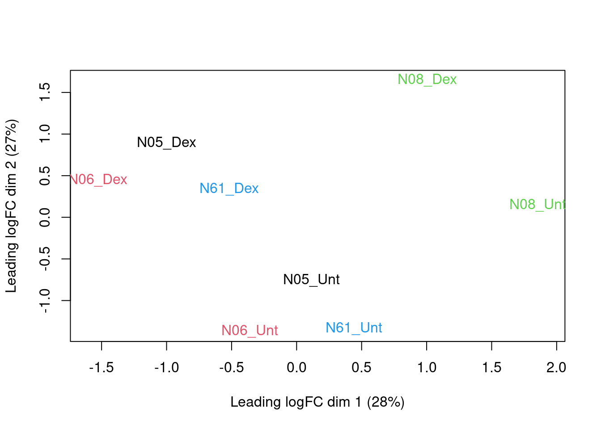
We first estimate the overdispersion.
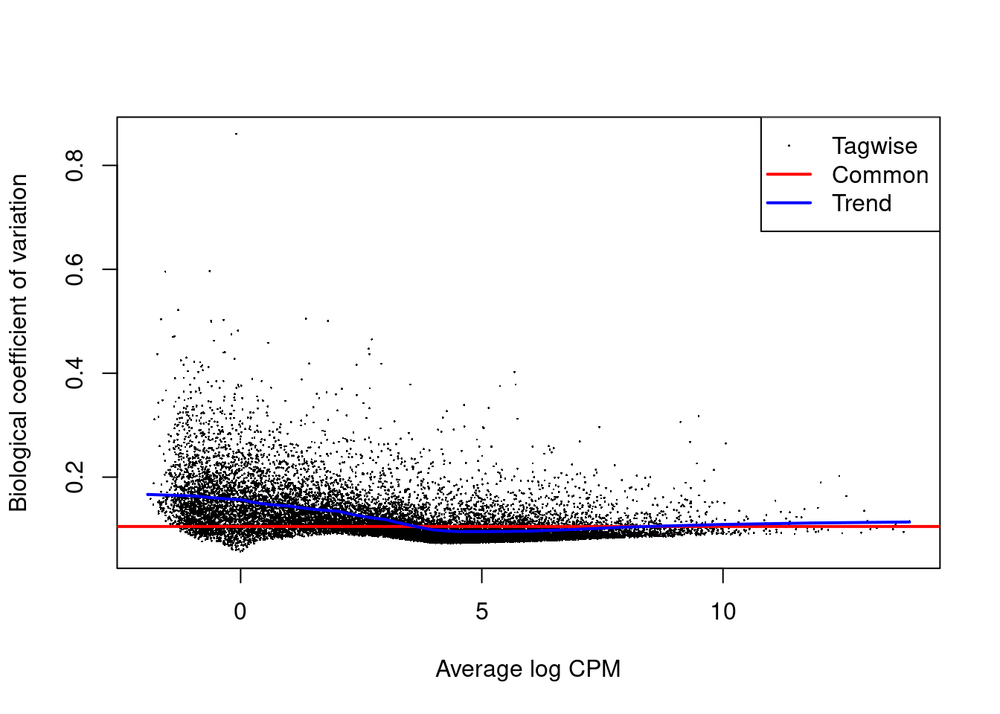
Finally, we fit the generalized linear model and perform the test. In the glmLRT function, we indicate which coefficient (which column in the design matrix) that we would like to test for. It is possible to test more general contrasts as well, and the user guide contains many examples on how to do this. The topTags function extracts the top-ranked genes. You can indicate the adjusted p-value cutoff, and/or the number of genes to keep.
fit <- glmFit(dge, design)
lrt <- glmLRT(fit, coef = "treatmentDexamethasone")
ttAll <- topTags(lrt, n = nrow(dge)) # all genes
hist(ttAll$table$PValue)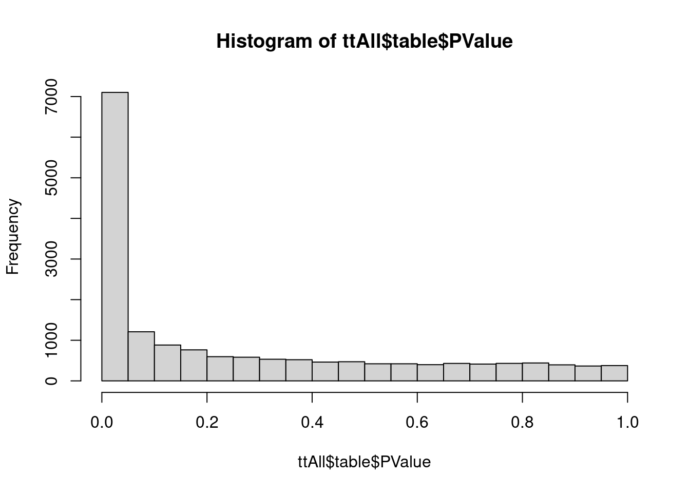
## [1] 5713There are 5713 genes statistiscally significant at the 5% FDR level.
We first make a volcanoplot and an MA plot.
library(ggplot2)
volcano <- ggplot(ttAll$table,aes(x=logFC,y=-log10(PValue),color=FDR<0.05)) + geom_point() + scale_color_manual(values=c("black","red"))
volcano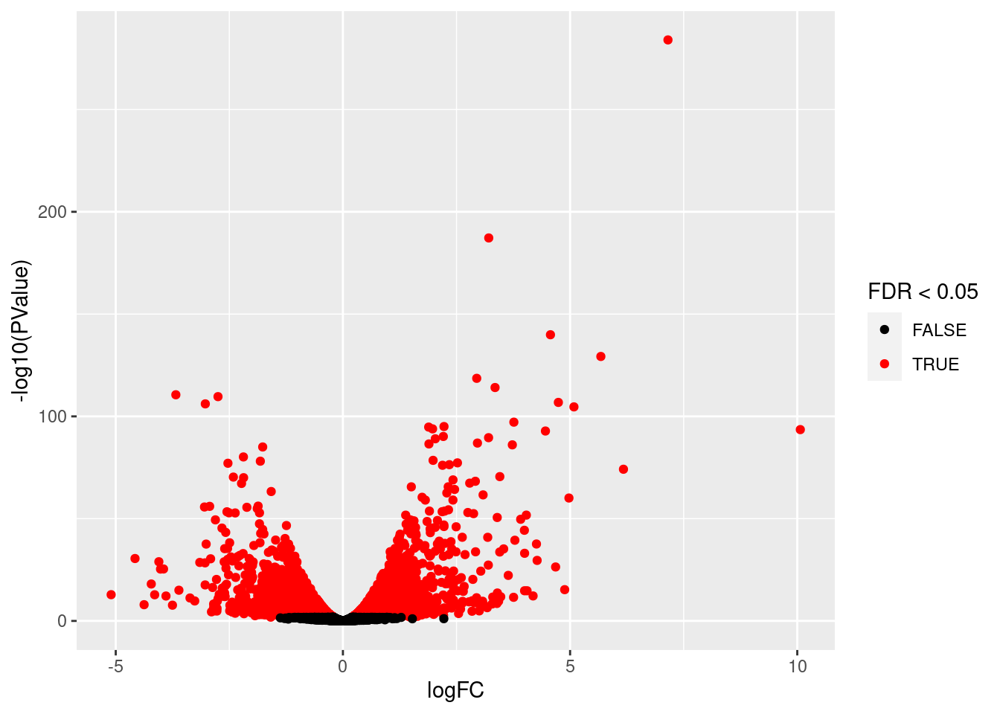
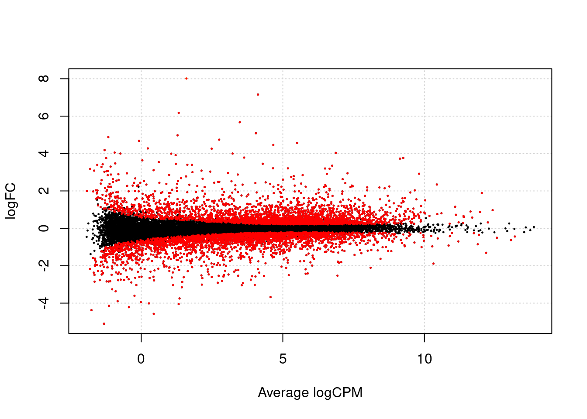
Another way of representing the results of a differential expression analysis is to construct a heatmap of the top differentially expressed genes. Here, we would expect the contrasted sample groups to cluster separately. A heatmap is a “color coded expression matrix”, where the rows and columns are clustered using hierarchical clustering. Typically, it should not be applied to counts, but works better with transformed values. Here we show how it can be applied to the variance-stabilized values generated above. We choose the top 30 differentially expressed genes. There are many functions in R that can generate heatmaps, here we show the one from the pheatmap package.
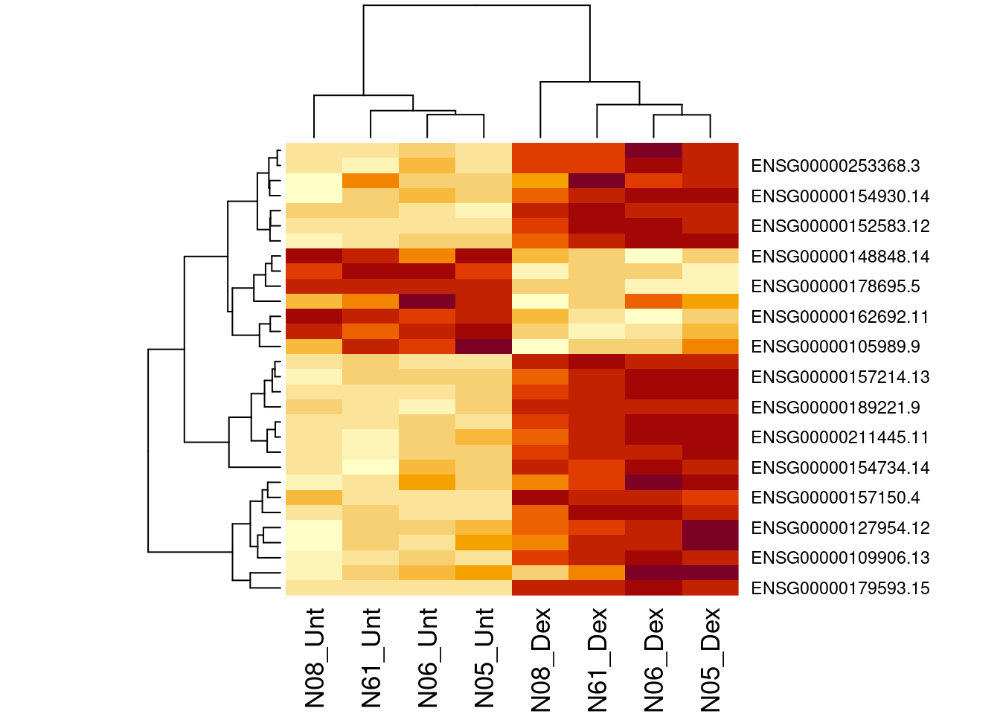
We find a huge number of DE genes. If this is the case it is always important to carefully check your results.
## `stat_bin()` using `bins = 30`. Pick better value with `binwidth`.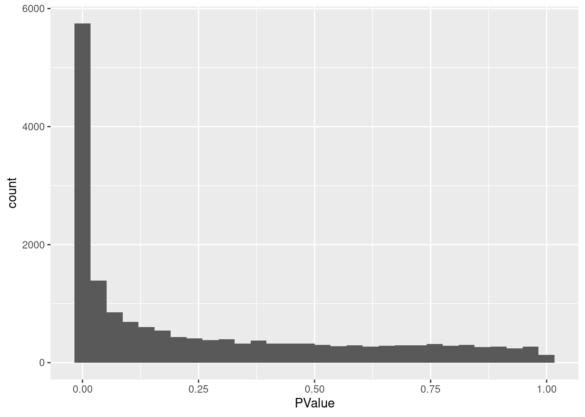
We indeed see a large enrichment of small p-values.
We know that the inference is only asymptotically valid, i.e. for large experiments.
EdgeR is using a likelihood ratio test for statistical inference. The null distribution of this test statistic follows an asymptotic chi-square distribution.
If we test for a single contrast (e.g. one model parameter or one linear combination of model parameters) then the chi-square distribution has one degree of freedom and you will perform a two-sided test.
Efron 2008 relaxes the use of a theoretical null distribution for assessing statistical significance.
He shows that we can exploit the massive parallel data structure of high throughput experiments to estimate the empirical null distribution.
He assumes that the test statistics follow a normal distribution under the null, but proposes to estimate the location and the variance empirically.
Assuming that the test statistic has a standard normal null distribution is not restrictive. For example, suppose that \(t\)-tests have been applied and that the null distribution is \(t_d\), with \(d\) representing the degrees of freedom. Let \(F_{td}\) denote the distribution function of \(t_d\) and let \(\Phi\) denote the distribution function of the standard normal distribution. If \(T\) denotes the \(t\)-test statistic, then, under the null hypothesis, \[ T \sim t_d \] and hence \[ F_{td}(T) \sim U[0,1] \] and \[ Z = \Phi^{-1}(F_{td}(T)) \sim N(0,1). \]
If all \(m\) null hypotheses are true, then each of the \(Z_g\) is \(N(0,1)\) and the set of \(m\) calculated \(z_g\) test statistics may be considered as a sample from \(N(0,1)\). Hence, under these conditions we expect the histogram of the \(m\) \(z_g\)’s to look like the density of the null distribution.
If a LRT test is conducted for a single contrast, we can obtain the corresponding \(Z_g\) by converting the p-values into quantiles of the normal, i.e.
\(z_g = \Phi^{-1} (1-p/2) \times \text{sign}(FC)\)
The normal distribution is very useful for diagnostics because we are used to work with it.
So in general we
ttAll$table <- ttAll$table %>%
mutate(z = sign(logFC) * abs(qnorm(PValue/2)))
ttAll$table %>%
ggplot(aes(x=z)) +
geom_histogram(aes(y = ..density..), color = "black") +
stat_function(fun = dnorm,
args = list(
mean = 0,
sd=1)
)## `stat_bin()` using `bins = 30`. Pick better value with `binwidth`.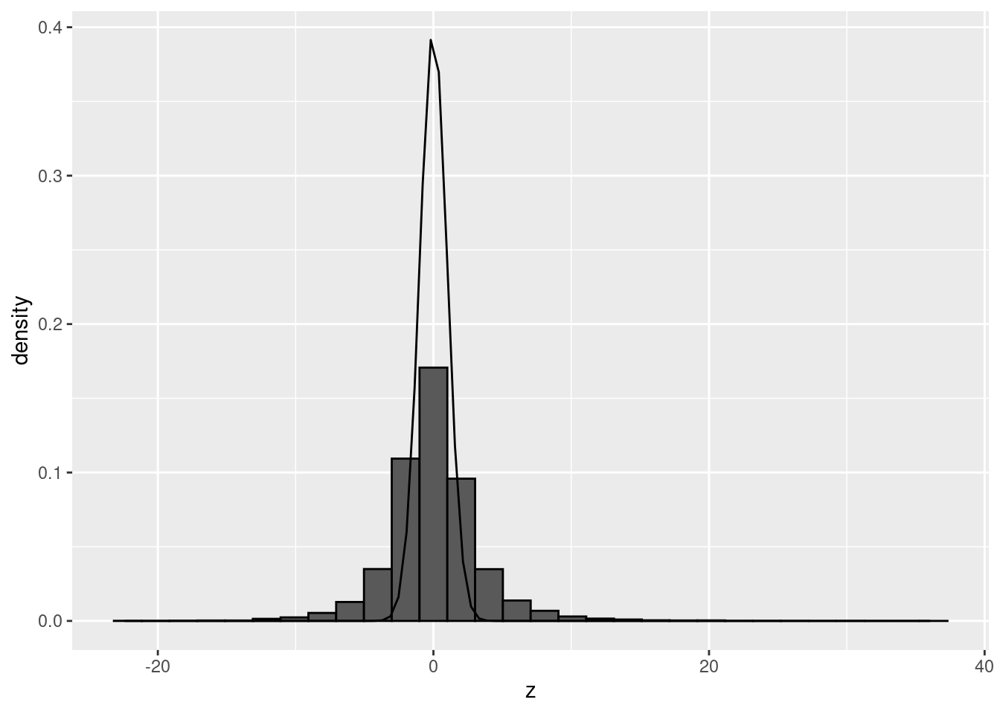
The histogram clearly shows that the theoretical null distribution N(0,1) does not seen to match the null distribution in the airway dataset.
We can empirically estimate the null distribution using the locfdr package. The locfdr package allows you to calculate local fdrs. It uses the two groups model:
\[f(z) = \pi_0f_0(z) + (1-\pi_0) f_1(z)\]
The local fdr or posterior probability that the gene with a certain test statistic z is a false positive then becomes
\[lfdr = \frac{\pi_0 f_0(z)}{f(z)} \]
Efron suggests to use a cutoff for the lfdr of 20%. So we return all genes for which the probability that they are false positives is below 20%. He claims that this corresponds to a conventional FDR of about 5% in the set that you return.
It can be shown that the FDR:
\[ FDR = E[lfdr] \approx \frac{\sum\limits_{k \in DE-set} lfdr_k}{n_\text{DE}} \]
We can also estimate the global FDR by simply calculating the average lfdr in the set that we return.
## Warning in locfdr(z): f(z) misfit = 11.1. Rerun with increased df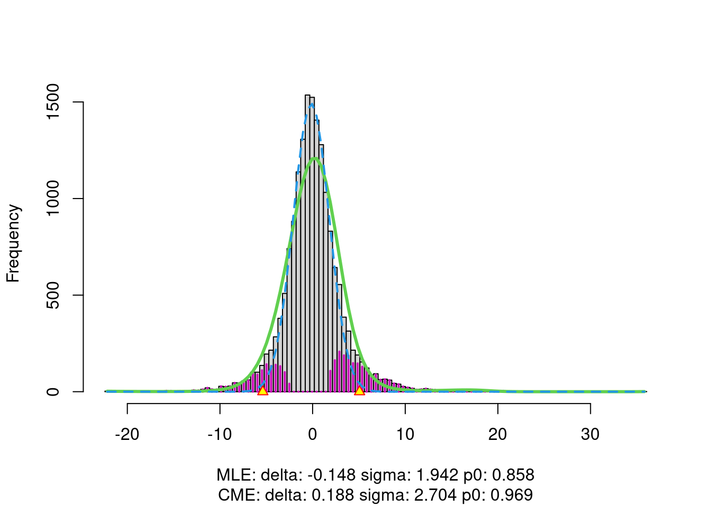
In the plot we see the histogram of the z-values.
We re-estimate \(f(z)\) by using
more degrees of freedom, e.g. df = 20.
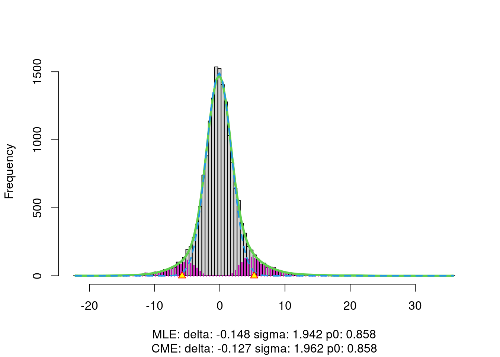
Estimated FDR corresponding to the set of genes with lfdr < 0.2 and number of significant genes with lfdr < 0.2?
ttAll$table %>%
filter(lfdr < 0.2) %>%
summarize(
FDR = mean(lfdr, na.rm = TRUE),
nSig = lfdr %>%
is.na %>%
`!` %>%
sum)Note, that
If you would like to opt to use the FDR method of Benjamini and Hochberg, you also could convert the z-values back in p-values by using a normal \(N(\hat \mu, \hat \sigma^2)\), where we use the estimated parameters for the null distribution by locfdr.
h <- ttAll$table %>%
pull(z) %>%
locfdr(df = 20, plot=FALSE)
ttAll$table <- ttAll$table %>%
mutate(pEmp = pnorm(
abs(z),
mean = h$fp0["mlest","delta"],
sd = h$fp0["mlest","sigma"],
lower = FALSE) * 2
) %>%
mutate(pAdjEmp = p.adjust(
pEmp,
method="BH")
)
ttAll$table %>%
filter(pAdjEmp < 0.05) %>%
nrow## [1] 1500We observe that the number of significant genes reduces to about the same amount as with the lfdr method of Efron. We, however, did not have to use a density estimator for the marginal cumulative distribution function of the test statistics. Instead, the BH method uses the empirical distribution of the statistics.
If we permute the gene expression data of all observations differently for every gene, we simulate expressions under the null and breakup the correlation structure between the genes.
set.seed(1004)
dgePermAll <- dge
dgePermAll$counts <- apply(dge$counts, 1, sample) %>% t
dgePermAll$samples$lib.size <- dgePermAll$counts %>% colSums
dgePermAll <- calcNormFactors(dgePermAll)
dgePermAll <- estimateDisp(dgePermAll, design)
plotBCV(dgePermAll)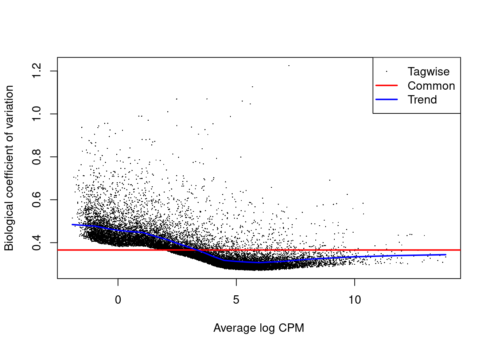
fitPermAll <- glmFit(dgePermAll, design)
lrtPermAll <- glmLRT(fitPermAll, coef = "treatmentDexamethasone")
ttAllPermAll <- topTags(lrtPermAll, n = nrow(dgePermAll))
ttAllPermAll$table <- ttAllPermAll$table %>%
mutate(z = sign(logFC) * abs(qnorm(PValue/2)))
ttAllPermAll$table %>%
ggplot(aes(x=z)) +
geom_histogram(aes(y = ..density..), color = "black") +
stat_function(fun = dnorm,
args = list(
mean = 0,
sd=1)
)## `stat_bin()` using `bins = 30`. Pick better value with `binwidth`.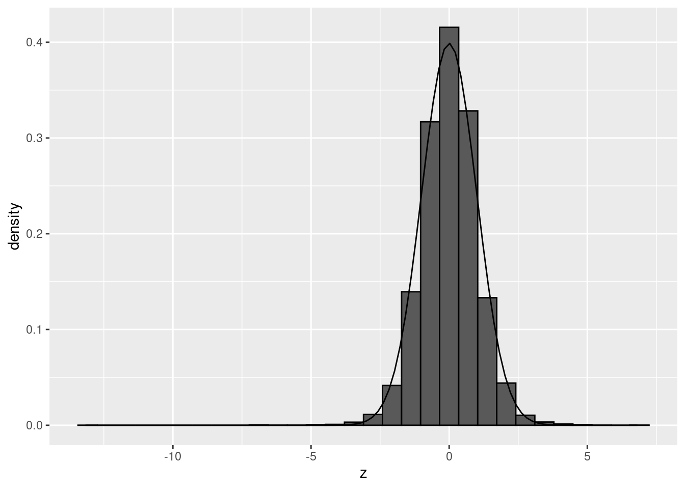
We observe that the null distribution is approximately following a standard normal distribution. There is no shift and the standard deviation in no longer larger than 1.
Hence, there do not seem to be issues related to failed mathematical assumptions.
We will now only permute the samples across conditions, but, we keep all genes together, e.g. by permuting the design matrix.
This simulates data from the null and breaks the association between the predictors and potential confounders, however, correlation between the genes remains.
Here, we have a block design so we will permute within block. We will perform a balanced permutation. We will select two cellines at random and we will permute the labels of the treatment.
## [1] 1 2## (Intercept) treatmentDexamethasone cellLineN061011 cellLineN080611
## SRR1039508 1 0 0 0
## SRR1039509 1 1 0 0
## SRR1039512 1 1 0 0
## SRR1039513 1 0 0 0
## SRR1039516 1 1 0 1
## SRR1039517 1 0 0 1
## SRR1039520 1 0 1 0
## SRR1039521 1 1 1 0
## cellLineN61311
## SRR1039508 1
## SRR1039509 1
## SRR1039512 0
## SRR1039513 0
## SRR1039516 0
## SRR1039517 0
## SRR1039520 0
## SRR1039521 0
## attr(,"assign")
## [1] 0 1 2 2 2
## attr(,"contrasts")
## attr(,"contrasts")$treatment
## [1] "contr.treatment"
##
## attr(,"contrasts")$cellLine
## [1] "contr.treatment"fitPermSamp <- glmFit(dge, designPerm)
lrtPermSamp <- glmLRT(fitPermSamp, coef = "treatmentDexamethasone")
ttAllPermSamp <- topTags(lrtPermSamp, n = nrow(dge))
ttAllPermSamp$table <- ttAllPermSamp$table %>%
mutate(z = sign(logFC) * abs(qnorm(PValue/2)))
ttAllPermSamp$table %>%
ggplot(aes(x=z)) +
geom_histogram(aes(y = ..density..), color = "black") +
stat_function(fun = dnorm,
args = list(
mean = 0,
sd=1)
)## `stat_bin()` using `bins = 30`. Pick better value with `binwidth`.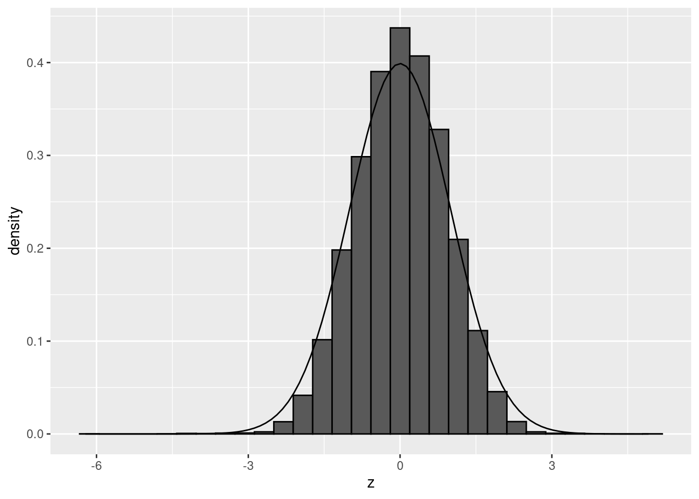
We observe that the null distribution is approximately matching with a standard normal. There is no shift and the standard deviation in no longer larger than 1. Here, the distribution seems to be a bit more narrow than the the theoretical distribution.
## [1] 0 2## (Intercept) treatmentDexamethasone cellLineN061011 cellLineN080611
## SRR1039508 1 1 0 0
## SRR1039509 1 0 0 0
## SRR1039512 1 0 0 0
## SRR1039513 1 1 0 0
## SRR1039516 1 1 0 1
## SRR1039517 1 0 0 1
## SRR1039520 1 0 1 0
## SRR1039521 1 1 1 0
## cellLineN61311
## SRR1039508 1
## SRR1039509 1
## SRR1039512 0
## SRR1039513 0
## SRR1039516 0
## SRR1039517 0
## SRR1039520 0
## SRR1039521 0
## attr(,"assign")
## [1] 0 1 2 2 2
## attr(,"contrasts")
## attr(,"contrasts")$treatment
## [1] "contr.treatment"
##
## attr(,"contrasts")$cellLine
## [1] "contr.treatment"fitPermSamp <- glmFit(dge, designPerm)
lrtPermSamp <- glmLRT(fitPermSamp, coef = "treatmentDexamethasone")
ttAllPermSamp <- topTags(lrtPermSamp, n = nrow(dge))
ttAllPermSamp$table <- ttAllPermSamp$table %>%
mutate(z = sign(logFC) * abs(qnorm(PValue/2)))
pPermSamp <- ttAllPermSamp$table %>%
ggplot(aes(x=z)) +
geom_histogram(aes(y = ..density..), color = "black") +
stat_function(fun = dnorm,
args = list(
mean = 0,
sd=1)
)
pPermSamp## `stat_bin()` using `bins = 30`. Pick better value with `binwidth`.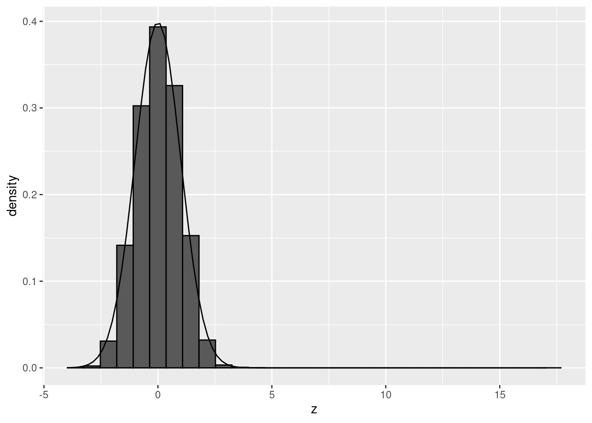
## `stat_bin()` using `bins = 30`. Pick better value with `binwidth`.## Warning: Removed 3 rows containing non-finite values (stat_bin).## Warning: Removed 2 rows containing missing values (geom_bar).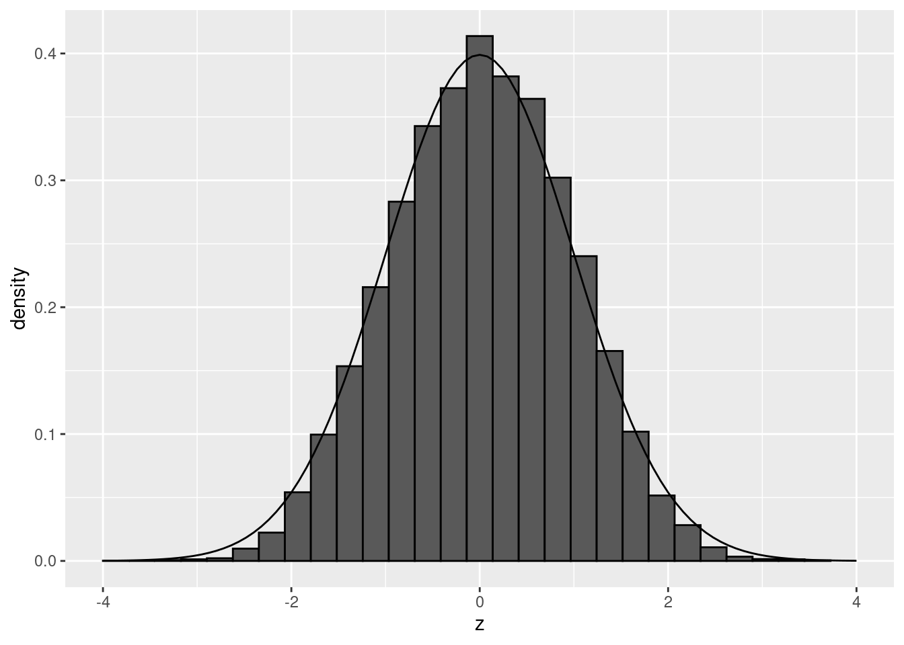
Both permutations show that there are no deviations from the theoretical null when we simulate under the null and break potential confounding but leave correlation between genes intact.
So there seems to be another reason for deviations of the null, than failed mathematical assumptions and correlation between genes!
Perhaps confounders that we do not account for?
This example also clearly shows that although permutation methods offer a simple and attractive way to deal with mathematically complicated hypothesis testing situations, they often cannot remedy failures of the theoretical null.
So the use of permutations to establish the null distribution should also be used with care in high throughput contexts. Indeed, depending on the permutation scheme that is used you might break correlations between genes, samples and/or potential confounding.
So even if you use a permutation approach in a high throughput context, e.g. a wilcoxon rank sum test or other permutation based tests, you still might need to check for deviations of the null!